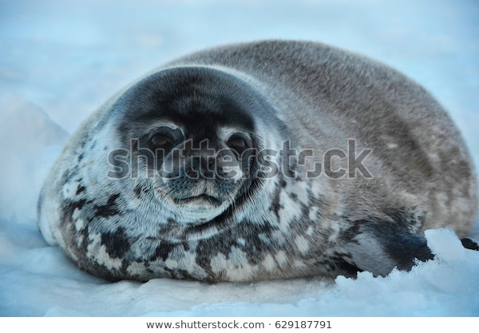
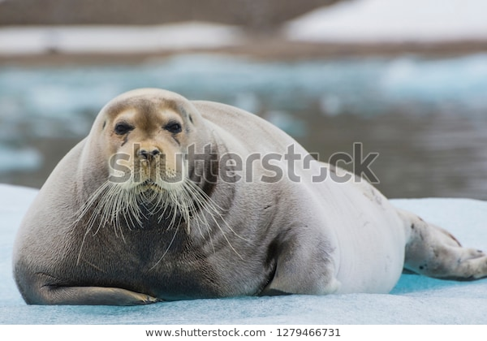
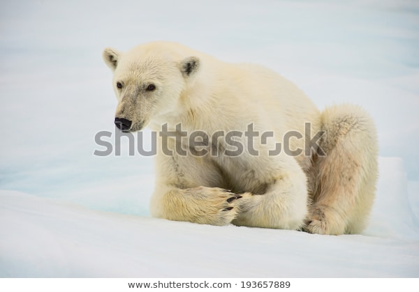
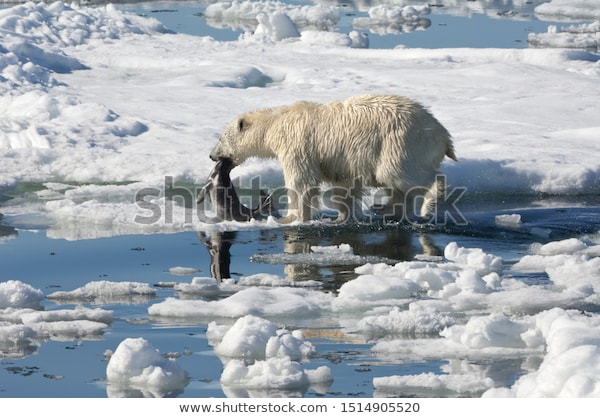

Polar bears are the most carnivorous member of the bear family, and the most prominent part of their diet is seals, mainly ringed and bearded seals. Millions of seals occupy the Arctic, becoming prey when they surface in holes in the ice to breathe or haul themselves onto the ice to rest. Mature bears tend only to eat the skin and blubber of the seal, which are easily digestable and rich in calories. Younger bears will consume the red meat rich in protein. Sometimes polar bears can be seen scaling cliffs in search for birds' eggs and chicks. Adolescent bears will often scavenge the carcasses from another kill, not having enough experience to hunt for themselves but being old enough to be independent from their mother. Occasionally, due to their isolation and lack of human interactions, hungry polar bears are often fearless and unpredictable towards humans and will occasionally kill and eat them. However, such attacks are rare due to the lack of nearby human populations.
The polar bear's main source of prey is the ringed seal, with an average adult weight of about 60 kg (130 lb), much smaller than the bear itself. However, they will also often hunt the harp seal, weighing in at roughly 115 to 140 kg (254 to 309 lb) fully grown. Bearded seals, on the other hand, can weigh almost as much as the bear hunting it, averaging in at 270 kg (600 lb). Adult male bearded seals can weigh up to 350 to 500 kg (770 to 1,100 lb), making them much too large for a female polar bear to hunt herself and leaving them as prey only to large male bears. Exceptionally large males will often try hunting even larger prey. They can kill an adult walrus weighing up to 2,000 kg (4,400 lb), averaging more than double the weight of the bear. Some bears may chage a group of walrus with the intention to split up the young, sick, or wounded from its pod.
 The polar bear's preferred method of huntig is called still-hunting. Using its excellent sense of smell, it will locate a seal breathing hole, then crouch nearby for a seal to emerge. It may lie in wait for up to several hours, until a seal comes up to the surface and exhales. The bear smells the seal, reaches into the hole and drags it out onto the ice. It then crushes its skull with its large teeth, killing it. Polar bears will also stalk seals already resting on the ice. Once a seal is spotted, it walks within 90 m (100 yd) and then crouches. If gone unnoticed, it will creep up withtin 9 to 12 m (30 to 40 ft) of the seal, when it rushes in to attack. Another hunting method is to raid the lairs female seals create in the snow to have pups.
 